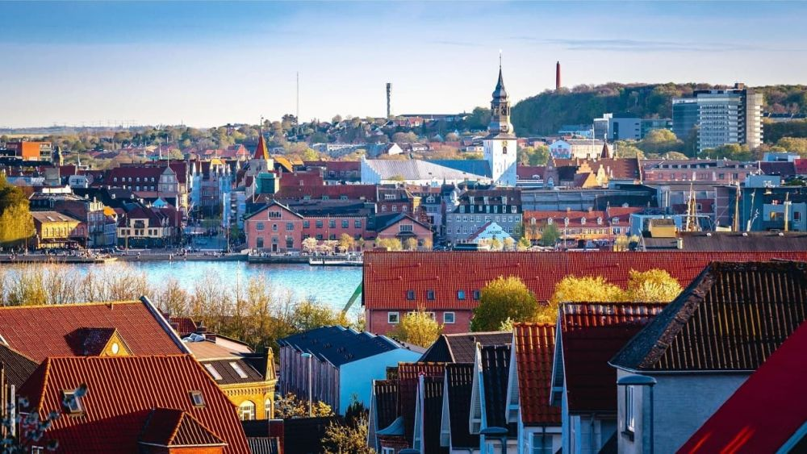

Descoperă orașul Aalborg - O călătorie în Danemarca
Aalborg este un oraș dinamizant situat în Danemarca, oferind o varietate de atracții interesante pentru vizitatori:
-

Grădina Zoologică Aalborg - Experiență faunistică
Explorează această grădină zoologică captivantă și interacționează cu o varietate de animale exotice și domestice.
-

Centrul istoric al orașului Aalborg - Arhitectură și istorie
Plimbă-te prin străzile pitorești ale centrului vechi și descoperă clădiri istorice și atracții culturale.
-

Distileria de aquavit din Aalborg - Gusturi locale
Vizitează distileria și învață despre procesul de producție al aquavitului, o băutură tradițională daneză.
-

Marina din Aalborg - Priveliști maritime
Bucură-te de vedere la marea Limfjord și de priveliști asupra navelor și iahturilor ancorate.
-

Casa Muzicii din Aalborg - Evenimente culturale
Descoperă evenimente muzicale și culturale la această clădire modernă și inovatoare.
Concluzii
Aalborg oferă o gamă diversificată de atracții culturale, naturale și gastronomice pentru vizitatori.